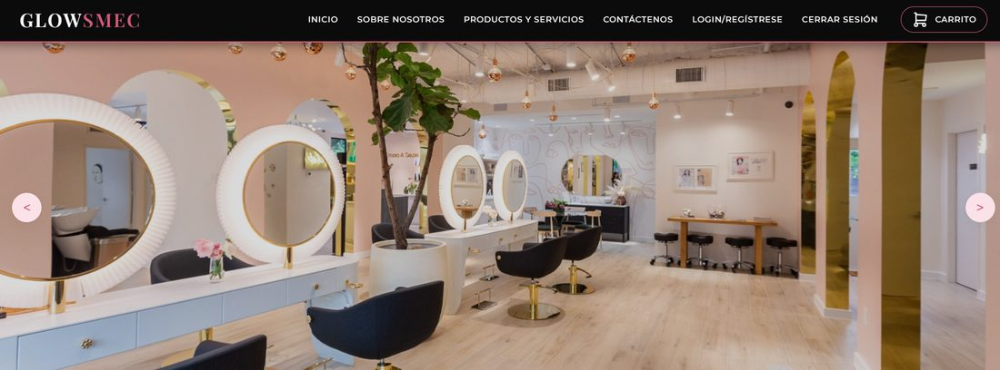
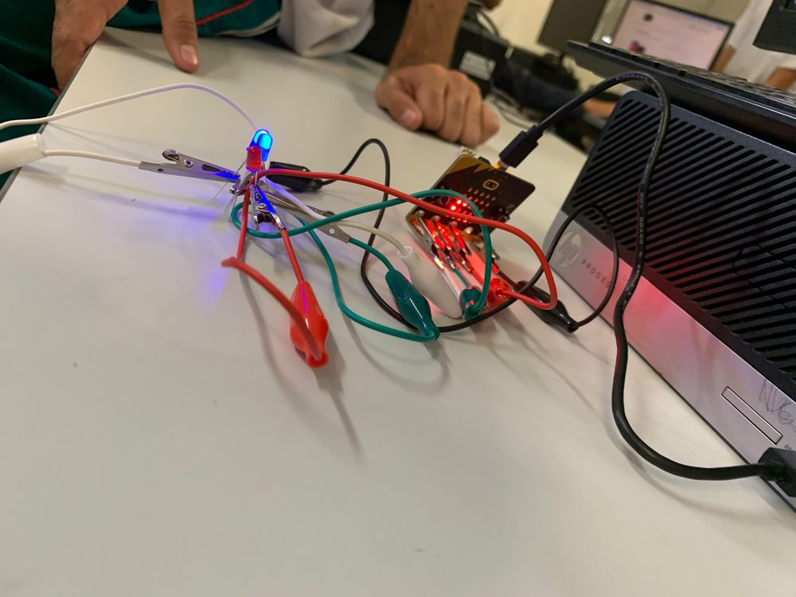
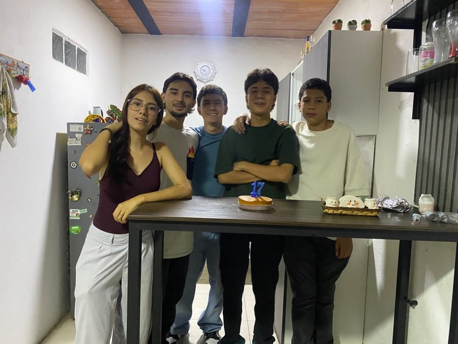

Soy una persona atenta y con mucha curiosidad por saber cómo se hacen las cosas. Me gusta entender qué hay detrás de cada sistema, y esa curiosidad es lo que me impulsa a seguir aprendiendo.
Diseño y construyo arquitecturas backend robustas, escalables y de alto rendimiento. Mi objetivo es que cada sistema crezca al ritmo del negocio, procese datos de forma eficiente y ofrezca una experiencia fluida e ininterrumpida al usuario final.
🎓
Educación y experiencia
🌱
Semillero Quipux Actualmente
Semillero ofrecido por la empresa Quipux. Mi profesora me habló de él y me aseguró que aprendería mucho. Me presenté con toda la ilusión y quedé seleccionado.
El reto: madrugar cada sábado y construir, poco a poco, una base sólida en programación con Java.
🌐
Proyecto de media técnica: página web En progreso
Desarrollé una página web partiendo de cero: aprendí a programar, a leer código ajeno y a manejar bases de datos.
El reto: trabajar en equipo con la presión de entregar un proyecto que funcionara, y resolver sobre la marcha los problemas que aparecían.
Lo que logré y aprendí: aprendí a trabajar bajo presión y a mantener a mi equipo de trabajo controlado a pesar de los problemas. También aprendí a no estresarme tanto con los problemas que me surgían, y que no está mal pedir ayuda.
Mi nuevo reto: estoy aprendiendo a subir proyectos a la web. Me propuse publicar la página de mi proyecto de técnica en internet usando InfinityFree, y poco a poco le voy agregando todas las funcionalidades y corrigiendo los errores que aparecen al pasar de un servidor local como XAMPP a un hosting real.
Mi rol: Desarrollador Backend, con apoyo en Frontend.
🕹️
Reto personal: mi propio Pac-Man
Me propuse crear un juego sencillo y decidí programarlo en MakeCode Arcade. Usando programación por bloques fui construyendo, paso a paso, una versión propia inspirada en Pac-Man.
Este año me gradúo del grado 11 en el colegio Asamblea Departamental y termino mi media técnica con el SENA en el programa de Programación de Software.
En este momento estoy aplicando a la Universidad de Antioquia para estudiar Ingeniería de Sistemas.
🚀
Proyectos

Glowsmec: página web de mi proyecto de técnica En progreso
Página web desarrollada para mi media técnica con el SENA. Me encargué del backend y apoyé el frontend. Hoy la estoy publicando en InfinityFree.
Expreso mis ideas con claridad y respeto, y escucho para que el equipo avance en la misma dirección.
🤝
Trabajo en equipo
En mi proyecto de media técnica aprendí a coordinarme con otros bajo la presión de entregar algo que funcionara.
🔄
Adaptabilidad
He aprendido tecnologías desde cero, como bases de datos y Java, y me ajusto a los cambios sin perder el ritmo.
🧠
Pensamiento crítico
Analizo los problemas antes de actuar y busco la causa, no solo el síntoma. Así resolví los errores que surgieron en mis proyectos.
❤️
Empatía
Cuando un compañero se bloquea por el estrés, lo calmo y lo acompaño a resolver el problema. Ver historia
😄
Buen sentido del humor
Aligero la tensión con un chiste o una pausa para respirar cuando el equipo está presionado. Ver historia
🔥
Cabeza fría, código caliente
Esta es la historia en la que más he sentido que usé mis habilidades blandas.
Para la feria de técnicas del colegio, mi equipo y yo programamos una solución de riego inteligente y controlado con tarjetas Micro:bit. El proyecto nos dio muchos dolores de cabeza: el código fallaba y el sistema a veces no funcionaba o regaba de forma incorrecta. Mis compañeros se estresaron al límite viendo que se acercaba la entrega.
En lugar de desesperarme, asumí el rol de mantener al equipo unido. Cuando la tensión subía, aligeraba el ambiente con un chiste o proponía respirar profundo. Si un compañero se bloqueaba, lo calmaba y revisábamos juntos las conexiones de la Micro:bit; casi siempre descubríamos que, por el afán, había quedado mal un cable o un sensor.

Las conexiones de la Micro:bit con los LEDs, el tipo de detalle que revisábamos juntos.
Logramos sacar el proyecto adelante y a los jueces les gustó mucho nuestra solución por su impacto. Aprendí que cuando la tecnología falla, lo más importante es la paciencia y el soporte mutuo para encontrar la salida.
🎮
Hobbies
🎮
Homebrew en la Nintendo Wii
Open source
Ingeniería inversa
Homebrew
Ports
Me apasiona seguir de cerca el ecosistema de las comunidades de desarrollo open source, la ingeniería inversa y el homebrew, centrándome especialmente en la consola Nintendo Wii. Más allá de ver el sistema como una plataforma de entretenimiento, me fascina investigar los límites de su arquitectura de hardware.
Dedico tiempo a estudiar cómo los desarrolladores logran vulnerar y modificar de manera segura el sistema operativo, qué herramientas crean para expandir sus capacidades originales, y cuál es la lógica detrás de los 'ports' de software moderno que consiguen adaptar a una consola con recursos de memoria y procesamiento tan estrictamente limitados.
Un ejemplo que me fascinó: el port de GTA Vice City que la comunidad hizo para la Wii, un juego que nunca fue pensado para esa consola. Me encantó probarlo en la mía y, después, curiosear todo lo que hicieron para portearlo.
Cómo me hace mejor profesional: aprender a sacar el máximo de recursos escasos es la misma mentalidad que busco en un backend eficiente y de alto rendimiento.
⚽
Fútbol
Me encanta jugar fútbol. En la cancha nadie gana solo: hay que coordinarse, confiar en el compañero, comunicarse rápido y mantener la calma cuando el partido se aprieta. Son las mismas habilidades que uso al trabajar en equipo en un proyecto con fecha de entrega.
🍳
Cocinar
Cocinar es mi forma de crear algo con las manos. Hay que seguir un orden, medir bien, probar y corregir sobre la marcha, y cuidar los detalles para que todo salga bien. Se parece mucho a programar: una receta es casi un algoritmo, y un pequeño error cambia el resultado.
👥
Estar con mis amigos
Compartir con mis amigos me mantiene con los pies en la tierra. Escuchar, reír y apoyarnos entre todos fortalece mi comunicación y mi empatía, y me recuerda que detrás de cada sistema que construyo hay personas reales.

📺
Ver series
Ver series me ayuda a desconectarme y a recargar energía. Me gusta analizar cómo se construyen las historias y los personajes, y volver al trabajo con la mente fresca y más ideas.